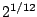

Frequencies, like amplitudes, are often measured on a logarithmic scale, in order to emphasize proportions between them, which usually provide a better description of the relationship between frequencies than do differences between them. The frequency ratio between two musical tones determines the musical interval between them.
The Western musical scale divides the
octave (the musical interval associated with a ratio of 2:1) into
twelve equal sub-intervals, each of which therefore corresponds to a ratio
of
. For historical reasons this sub-interval is called a
half-step.
A convenient logarithmic scale for pitch is simply to
count the number of half-steps from a reference pitch--allowing fractions to
permit us to specify pitches which don't fall on a note of the Western scale.
The most commonly used logarithmic pitch scale is
``MIDI pitch", in which the pitch 69 is assigned to a frequency of 440 cycles
per second--the A above middle C. To convert between a MIDI pitch  and a frequency
in cycles per second
and a frequency
in cycles per second  , apply the
Pitch/Frequency Conversion formulas:
, apply the
Pitch/Frequency Conversion formulas:
MIDI itself is an old hardware protocol which has unfortunately insinuated itself into a great deal of software design. In hardware, MIDI allows only integer pitches between 0 and 127. However, the underlying scale is well defined for any ``MIDI" number, even negative ones; for example a ``MIDI pitch" of -4 is a decent rate of vibrato. The pitch scale cannot, however, describe frequencies less than or equal to zero cycles per second. (For a clear description of MIDI, its capabilities and limitations, see [Bal03, ch.6-8]).
A half-step comes to a ratio of about 1.059 to 1, or about a six percent increase in frequency. Half-steps are further divided into cents, each cent being one hundredth of a half-step. As a rule of thumb, it might take about three cents to make a discernible change in the pitch of a musical tone. At middle C this comes to a difference of about 1/2 cycle per second. A graph of frequency as a function of MIDI pitch, over a two-octave range, is shown in Figure 1.4.